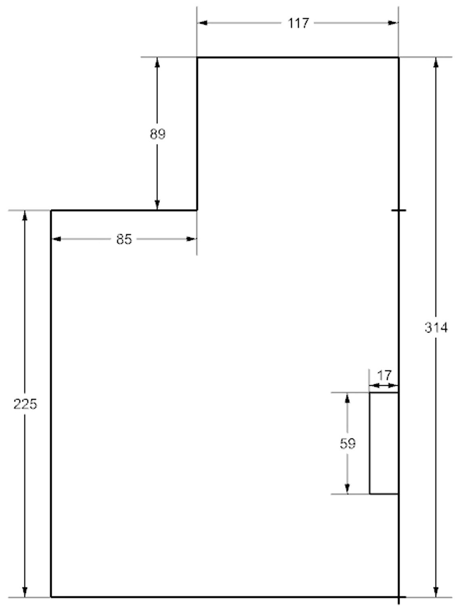
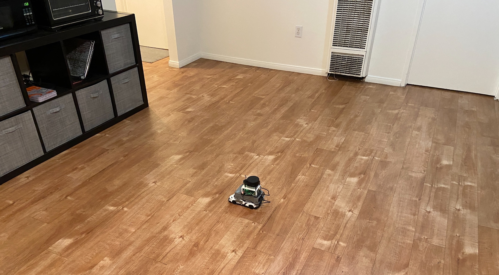
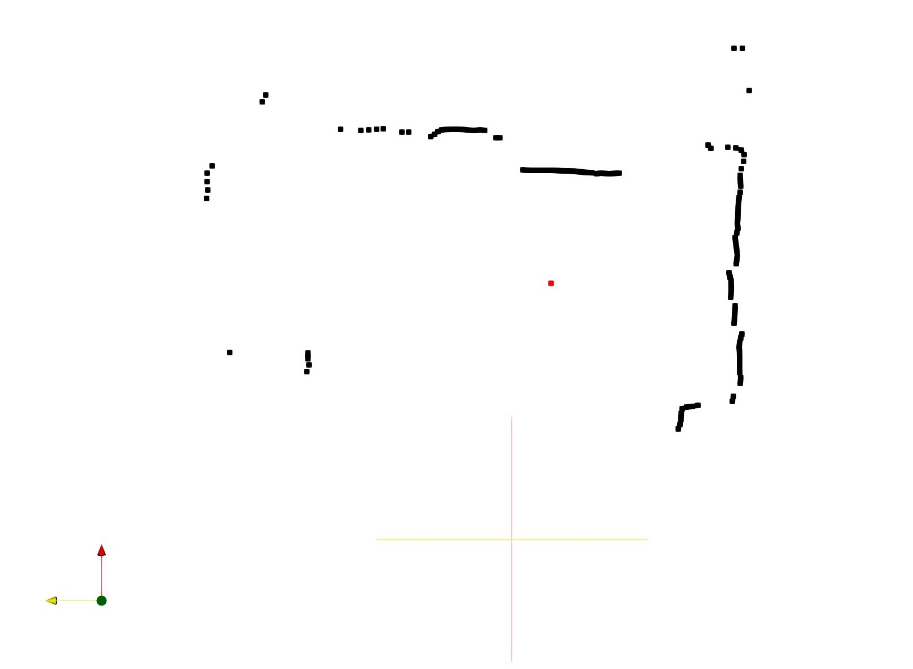
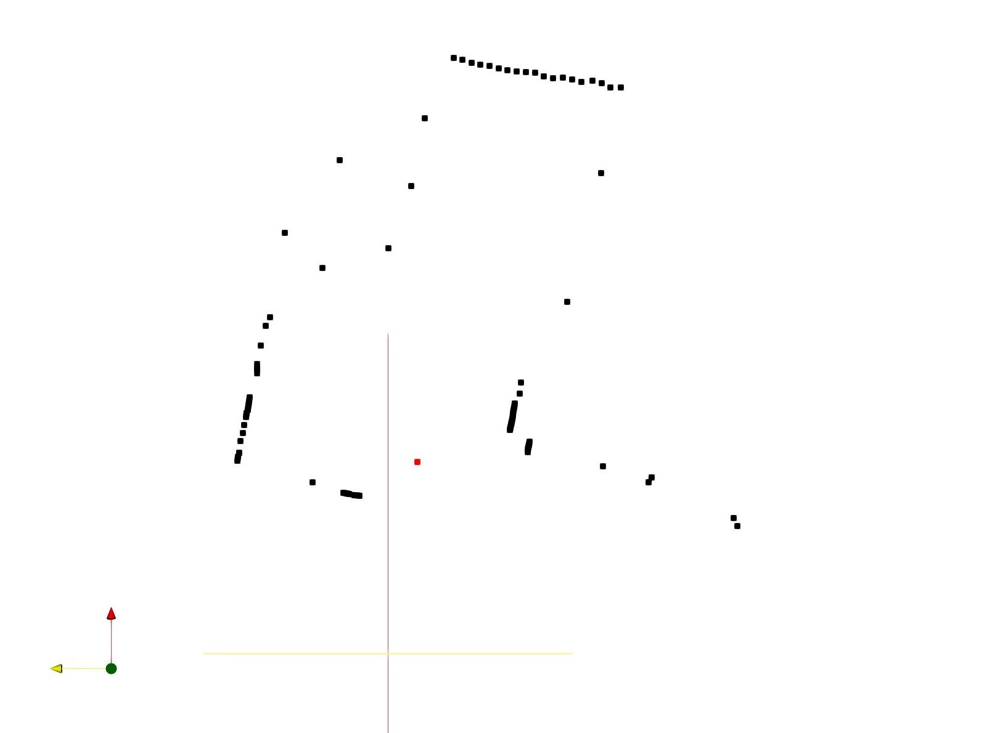
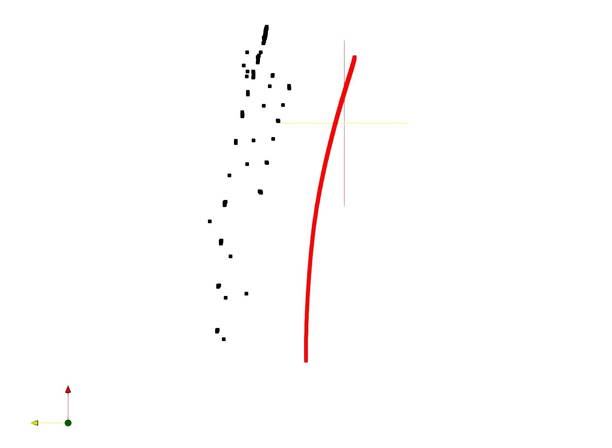
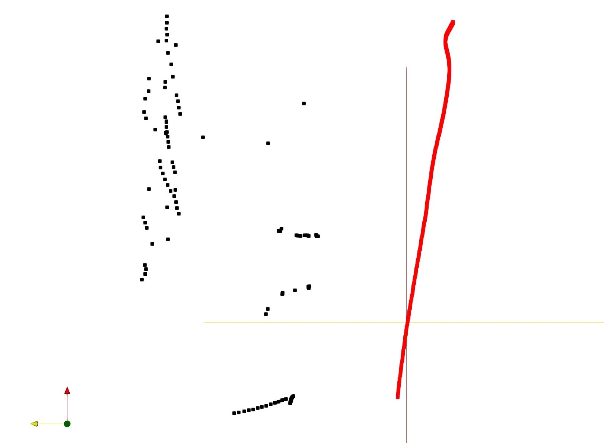

Our project is to develop a LiDAR (Light Detection and Ranging) sensor system that can accurately map the interior of lunar caves. This sensor would be strapped to a lunar rovers capable of descending into lunar caves. The goal of this project is to get a better understanding of lunar terrain and use these maps for further exploration and study of the Moon. The sensor system consists of a LiDAR sensor with one degree of freedom (in-plane rotation), an IMU (Inertial Measurement Unit) sensor, and a Raspberry Pi. Each member of the team had a different role, Brad worked on sensor fusion, Tristan worked on LiDAR integration, Griffin worked on IMU integration, and Ashley worked on data visualization and mapping.
The numerical method used was a simple time step integration scheme, where v1 = v0 + aΔt, and p1 = p0 + v1Δt (where a is the acceleration, v is the velocity, p is the position, and Δt is the time step). As for the determining the direction of gravity relative to the IMU, the roll, pitch, and yaw angles calculated in the IMU File were used to find a quaterion characterizing the rotation from the initial state to the current state. Such a quaternion could rotate the gravity vector from being solely in the -z direction to what the IMU senses is the gravity vector. In the Data Flow figure, the transformed vector is calculated in the IMU File using functions from the Vector Rotation File.
Custom message files are not available with pure Python ROS2 packages, so a naïve implementation was used (see Data Flow). With this implementation came another significant issue: the smaller the time step for the IMU sensor, the less data the LiDAR would return before stopping transmission. Given the IMU's tendency to drift, larger time steps would lead to worse results. (The IMU drift is also why the goal of a 3D map was simplified to a 2D cross-section.) The implemented solution was to determine the amount of data points the LiDAR returns for the used time step, and then have the code essentially restart the LiDAR's scanner before the number of data points reaches the aforementioned limit. Although this solution keeps the code modular, in that the file for each sensor contains functions solely for its sensor, it causes a gap in the data stream ranging from 1-2 seconds. Had time allowed, the bug would have been properly troubleshooted, or the files would have been translated to C++ and incorporated into a C++ ROS2 package.
Aside from the sensors, each box is a file. The four Python files are the LiDAR File, IMU File, Vector Rotation File, and Sensor Fusion File. (The LiDAR File was found here.) The rest of the files are CSV files that hold data. The Vector Rotation File provides functions to the IMU File that allow it to determine the XYZ accelerations due to gravity, and thus account for them. Because the Sensor Fusion File runs on loop, the IMU File outputs the most recent positions, velocities, and angles to a file so it can refer back to them when finding the new positions, velocities, and angles. The Acceleration file is meant for troubleshooting, but the Fused Data File is what will be visualized in Paraview.
The way the code was run was by using SSH to access the Raspberry Pi, and manually running the Sensor Fusion File. To download the data, SCP was used to copy the output files from the Raspberry Pi. However, we found out that a downside of this method is that the Raspberry Pi must be connected to WiFi, and connecting it to a different network would require a monitor and keyboard.
Four runs were done to determine if the sensors were fused: for each IMU state (enabled/disabled), the rover would be stationary or moving. The layout of the room is shown in the below image.
The results of the runs are in the below table, where the first column contains the stationary tests, and the second contains the moving tests. The first row shows the tests where the IMU was disabled, and the second shows the tests where the IMU was enabled. The black points are the features of the room relative to the rover's self-calculated location, and the red points are the rover's self-calculated locations. The stationary test with the IMU disabled shows that the LiDAR is able to map out the features of the room, and the moving test with the IMU confirms that the features of the room would shift if the rover's location is not updated. However, the tests with the IMU enabled show that the IMU's drifting is significant enough that the results no longer resemble a cross-section of a room.
| Stationary | Moving |
|---|---|
|  | |
|  |  |
|  |  |
Initially, we tried to integrate the IMU and LiDAR data together to yield a 3D plot similar to a topographic graph. This would have been accomplished by having the rover drive over ramps or bumps. In order to do this, we had one file constantly running which would call data from the IMU and from the LiDAR and mesh them together (see Data Flow). However, we were limited to the 2D data of the LiDAR sensor because the IMU's drift. Additionally, due to the implementation described in the Challenges section, the data rate from the LiDAR was limited.